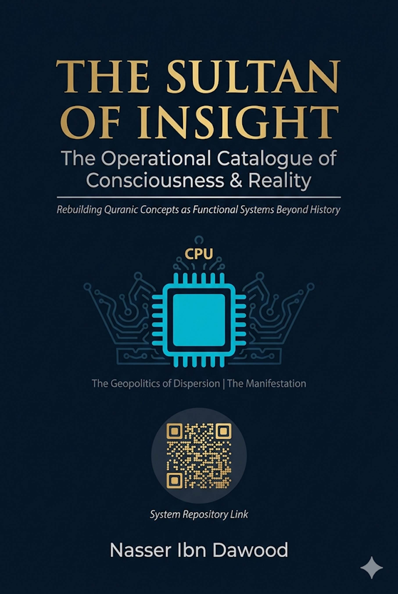

**A Condensed Conceptual Translation of "Handasat Al-Lisan Al-Mubeen"**
**By Nasser Ibn Dawood**
---
Knowledge is a universal right. The author firmly believes that wisdom should not be locked behind paywalls or language barriers.
- **Global Access Policy:** All books in this library are available for free in multiple digital formats (PDF, HTML, DOCX, TXT).
- **The Digital Library:** As of early 2026, the collection hosts 68 volumes (34 in Arabic and 34 in English), fully optimized for AI-assisted research and digital archiving.
- **Official Platforms:**
- Main Website: nasserhabitat.github.io/nasser-books/
- GitHub: nasserhabitat/nasser-books
This English edition is a condensed conceptual adaptation. It is not a word-for-word translation, but rather an "extraction of essence." It presents the core philosophical framework in accessible English, omitting the exhaustive linguistic debates and classical references found in the original Arabic text.
**For the academic researcher:** The original Arabic version remains the primary source for comprehensive linguistic analysis, detailed exegesis (Tafsir), and the complete bibliography.
---
We live in an era of "cognitive paralysis." Words are trapped in prisons of synonymy or reduced to primitive sensory images. Humanity has learned to read sacred texts but forgotten how to *operate* them.
This book is not about religion in its ritualistic sense. It is an exploration of the **"Physics of Meaning"** and the engineering of the "Mubeen Tongue" (The Clear Arabic Discourse).
In the Quranic system, a word is not a static noun. It is a **work system** with inputs and outputs. We will deconstruct the "atoms" of major terms to reveal:
- How **The Book** transforms from "written pages" into an **orchestration and execution program**.
- How **The Resurrection** transforms from a "delayed apocalyptic event" into an **authority for evaluating and managing present reality**.
---
### The Core Problem
Traditional thought associates the term "The Book" (Al-Kitab) with a physical container (paper and leather) or a frozen past event. This is a fatal error.
The word "Kitab" is built from an integrated pair: **KAT + TAB**
**Phase 1: KAT (كَت) – Structural
Orchestration**
- **Function:** The process of "KAT" means gathering scattered elements into a single, purposeful mass.
- **Systemic Concept:** The transition from chaos to ordered system.
**Phase 2: TAB (تَب) – Executive Confirmation**
- **Function:** The process of "TAB" means cutting, deciding, and irreversible verification. The moment when "orchestration" becomes "enforced reality."
- **Systemic Concept:** The "validation stamp" that makes a law automatically execute in matter.
> **The Book is the system that gathers laws (KAT) and confirms them into reality to produce deterministic results (TAB).**
When the text says *"Kutiba 'alaykum"* (It is prescribed/drafted upon you), it is not talking about writing in heavenly ledgers. It is talking about **functional programming** that became part of your operational structure.
The relationship between a human and The Book is not "reader with a page" but **"engineer with a program."**
- **To be given The Book:** Means you have been granted the access code to the laws of existence.
- **To conceal The Book:** Means disabling the effectiveness of these laws and hiding the "software" from people to keep them in a state of "illiteracy" (inability to operate).
---
Traditional thought treats Resurrection (Al-Qiyamah) as the "end of time." In functional linguistics, it is the **culmination of consciousness**.
The word is built from the integrated pair: **QI + YAM**
**Phase 1: QI (قي) – Authority of Capture & Fixation**
- **Function:** The act of "Qiyam" (upholding) – taking hold of something and bringing it out of randomness into vertical stability.
- **Systemic Concept:** Sovereignty. The ability to "capture" your affairs, stop the flow of events, and inspect them with sharp awareness.
**Phase 2: YAM (يم) – Field of Absorption &
Ocean**
- **Function:** "Yam" means the ocean – the vessel that contains material or information with high density.
- **Systemic Concept:** The database or procedural environment where the human experiment takes place.
> **Resurrection is the moment when consciousness "captures" (QI) its entire cognitive and material "ocean" (YAM) to issue the final judgment.**
It is a state of **systemic awakening**. When the "resurrection" of an idea, project, or human occurs, it means they have reached maximum calibration – where error cannot hide, and results are displayed with total clarity.
Resurrection is the **Universal Quality Control Authority**.
- Societies that disable "Resurrection" (continuous evaluation) fall into "torment" (functional dysfunction).
- The human who postpones their resurrection until after death is a human who disables their consciousness's authority to evaluate their present.
> **Resurrection is your "uprising now."** By your ability to capture the content of your life (Yam) and fix it on the path of straightness (Qi).
---
We have been trapped by biological readings of the terms "Men" (Rijal) and "Women" (Nisa). In the Quranic tongue, these are **functional ranks**.
**Derived from: RAJ + JAL**
- **RAJ (رج):** Repetition
+ Gathering. The impulse that breaks inertia to begin action.
- **JAL (جل):** Gathering + Continuity toward goal. The state of
majesty where a mass reaches peak maturity and straightness.
**Functional Concept:** The Man is the **advancing engine**. The rank that possesses initiative, sets laws (logic), and leads the system. He is the "agent" who determines the direction of the compass.
**Derived from: NIS + SA**
- **NIS (نس):** Emergence
+ Path stabilization. Represents emergence that depends on a pre-established
path.
- **SA (سأ):** Path + Origin.
Represents the inevitable delay of the result's
appearance.
**Functional Concept:** The Woman is the **executive rank**. The force that absorbs the "program" (the initiative) and transforms it into "offspring" or tangible reality. She is functionally delayed because she comes in the "production" phase, not the "founding" phase.
When the two ranks integrate, the relationship of **Qawamah** emerges as an engineering necessity, not class superiority:
> *"Men are Qawwamun over Women"* means linguistically: **The functionally advanced rank** (possessing initiative and logic) is responsible for **evaluating** and **calibrating** the **executive rank** to ensure results do not deviate from The Book.
- When the dependent rank advances to lead without a program → Chaos.
- When the initiating rank becomes passive in evaluation → Collapse.
---
These terms are not ethnic or sectarian identities. They are **performance trajectories** that any consciousness can fall into.
**Derived from: YAH + HUD**
- **Function:** The system that "returns" (Yahud) constantly to old rules and refuses to update The Book.
- **The State:** The consciousness that sees "truth" only in what its ancestors were upon. Knowledge becomes a frozen inheritance that disables Resurrection (change and evaluation).
**Derived from: NAS + SAR**
- **Function:** The system that "supports" (Yansur) an idea or trend merely because it appeared, and insists (Sarra) upon it without subjecting it to cognitive evaluation.
- **The State:** The consciousness that accepts "ready-made" ideas and chases the "trend" or sect just for the feeling of belonging.
> *"Then Allah will judge between them on the Day of Resurrection"* means linguistically that **comprehensive evaluation** (Al-Qiyamah) alone can sort the truth from the falsehood of "ancient inertia" and "new momentum."
Exiting these two trajectories is what the tongue calls **Islam** – complete surrender to the laws of reality (The Book) and ever-renewing truth. Neither fossilizing on the old (Yehud) nor chasing every scream without awareness (Nasara).
---
Heaven (Jannah) and Hell (Nar) are not just "delayed" metaphysical places. They are **performance environments** formed in reality based on the straightness or crookedness of the system.
**Derived from: JAN + NAN**
- **JAN (جن):** Gathering
+ Emergence. Represents shielding and protection.
- **NAN (نن):** Double emergence.
Represents complete appearance, abundance, and perfection.
**Functional Concept:** Heaven is the **secure and stable system**. The state where consciousness and society reach self-sufficiency and cognitive security. Content is protected and productive.
**Derived from: NA + RAR**
- **NA (نا):** Emergence + Extension. Represents
overwhelming spread that escapes control.
- **RAR (رر):** Repetition +
Repetition. Represents aimless repetition or burning disturbance.
**Functional Concept:** Hell is the **state of defeat and loss**. The environment where the system loses its balance, effort dissipates in conflicts and disturbances that consume capabilities and prevent guidance.
**Derived from: NAH + HAR**
- **Function:** Information and science channels. Earthly heaven (welfare, technology, justice) is built only upon **knowledge infrastructure** – uninterrupted rivers of science.
- If the **rivers of science** dry up, heaven deserts into hell (poverty, dependency, defeat).
- If **Resurrection** (the evaluation engine) is disabled, the good and evil-doer become equal, and the system falls.
- If **The Book** is lost, humans wander between functional ranks and mental trajectories.
> **Heaven is cognitive sovereignty. Hell is dependency and ignorance.**
---
Just as Rijal/Nisa are functional ranks, **Dhikr (The Male/Rememberer)** and **Untha (The Female/Feminine)** are two cognitive systems **inside every human being**.
**Derived from: DHAK + KAR**
- **DHAK:** Signal/Alert + Dissection → Conscious capture of information.
- **KAR:** Dissection + Repetition → Re-execution of information.
**Functional Concept:** Dhikr is the **system of knowledge retrieval and operation**. Not just "memory," but:
- Recalling laws
- Activating them at the right moment
- Converting them into decisions
**Its function:** Connects The Book to reality. Prevents the separation between knowledge and action.
**Derived from: UN + NATH**
- **UN:** Origin/Cut + Emergence → Birth of content.
- **NATH:** Emergence + Diffusion → Discharging content into reality.
**Functional Concept:** The Female is the **system of embodying knowledge into an effect/ trace**. She gives the idea a body. She shows the result.
> **Dhikr (Recall) → Untha (Embody) → Dhikr (Evaluate) → Untha (Reproduce)**
**If this loop breaks:**
- Dhikr becomes "theory without trace"
- Untha becomes "action without awareness"
> *"And the male is not like the female"* is not a value judgment, but an engineering statement. The complete human is not male-only nor female-only, but one who masters managing the relationship between both systems inside them.
---
The question is no longer: "Is the idea correct?"
But: **"How do we operate it in reality?"**
We apply the model to three levels: **State, Company, Individual**
| Element | Application |
| :--- | :--- |
| **B** | Clear constitution, applicable laws |
| **Q** | Effective oversight institutions (audit, judiciary), transparency |
| **H** | Strategic leadership (functional men) + Strong executive bodies (functional women) |
| **E** | Reduce bureaucracy, fight corruption and stagnation |
| **F** | Education, scientific research, knowledge infrastructure |
**Result:**
- If B × Q > E → Stable state (Functional Heaven)
- If opposite → Failed state (Functional Hell)
| Element | Application |
| :--- | :--- |
| **B** | Clear vision + Work system |
| **Q** | KPIs, periodic performance reviews |
| **H** | Management (thinking) + Team (execution) |
| **E** | Deadly routine, resistance to change |
| **F** | Continuous training, skill development |
**Result:** The successful company is not the smartest, but the one with **more evaluation + more learning**.
| Element | Application |
| :--- | :--- |
| **B** | Clear principles, personal vision |
| **Q** | Daily review, self-assessment |
| **H** | Decisions (initiative) + Actions (execution) |
| **E** | Procrastination, negative habits |
| **F** | Reading, learning, experience |
**Result:**
- Person who evaluates → Evolves
- Person who doesn't evaluate → Repeats (stagnates)
The model is one. The levels differ:
- State without evaluation = Corruption
- Company without evaluation = Loss
- Individual without evaluation = Wandering
---
What is "Islam" in this framework?
**Not an identity. Not a ritual.**
> **Islam is a state of conscious surrender to the laws of the system (The Book) through activating evaluation (Resurrection).**
**Islam =**
1. Possessing the software (The Book)
2. Operating it (Dhikr)
3. Embodying it (Untha)
4. Evaluating it (Resurrection)
| Trajectory | The Dysfunction |
| :--- | :--- |
| Functional Yehud | Freezing the program |
| Functional Nasara | Operating without verification |
| **Islam** | **Operation + Continuous evaluation** |
> **Islam is a dynamic operating system that maintains a permanent balance between knowledge, action, and evaluation.**
---
The entire system can be represented as:
**Where:**
- **B** = The Book (The program / laws)
- **Q** = Resurrection (Evaluation / quality control)
- **H** = Human Performance (Initiative + Execution)
- **E** = Inertia (Cognitive stagnation, bureaucracy, delay)
- **F** = Knowledge Rivers (Education, research, infrastructure)
- The higher the evaluation (Q) and knowledge (F) → The higher the system quality
- The higher the inertia (E) → The system collapses
---
1. **Do not be satisfied with understanding.** Understanding is a beginning, not an end.
2. **Activate Resurrection daily.**
- Ask: "Does what I'm doing work?"
- Ask: "Is there a defect?"
3. **Build your rivers.**
- Learn.
- Develop.
- Create knowledge.
4. **Exit the dysfunctional trajectories.**
- Do not be a prisoner of the past (Functional Yehud).
- Do not be a blind follower (Functional Nasara).
5. **The Final Result:**
> Either you lead reality... or you are reshaped within it.
---
**This book is not an interpretation...**
**It is a tool.**
**Not for reading only...**
**But for reconstruction.**
> **The Book + Resurrection = Sovereignty**
> **Disabling them = Dependency**
Heaven is not a place you go to after death.
Heaven is a state of cognitive sovereignty you build **now**, through rivers of knowledge, continuous evaluation, and the precise operation of your inner systems.
Hell is not a pit of fire waiting for you.
Hell is the functional state of defeat, confusion, and dependency you enter when you disable The Book and abandon Resurrection.
**You are either an engineer of reality... or a product of someone else's engineering.**
---
**Nasser Ibn Dawood**
- Structural engineer specialized in metallurgy (University of Mons, Belgium)
- Born in Morocco, April 27, 1960
- Full-time researcher in Quranic linguistics and digital manuscript analysis
- His work is the product of the intersection between engineering, language, and contemplation
**The Library:** 68 books (34 Arabic, 34 English) as of early 2026, all free and open-access.
**Core Principle:** Knowledge is a universal right. Wisdom is a trust, not a commodity.